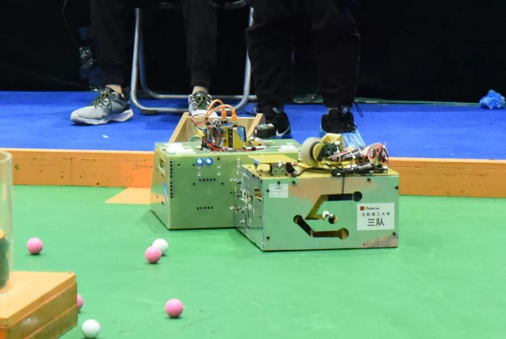
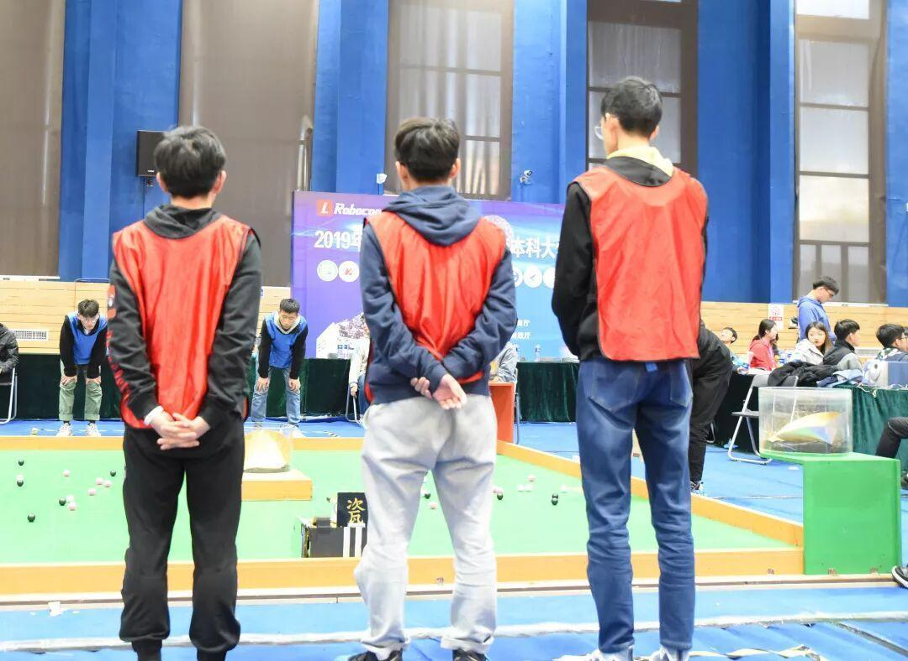
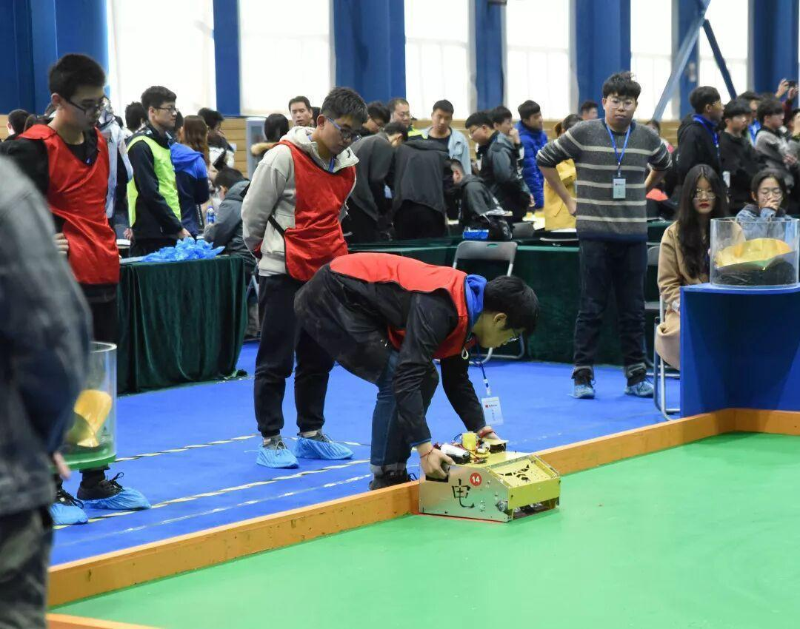
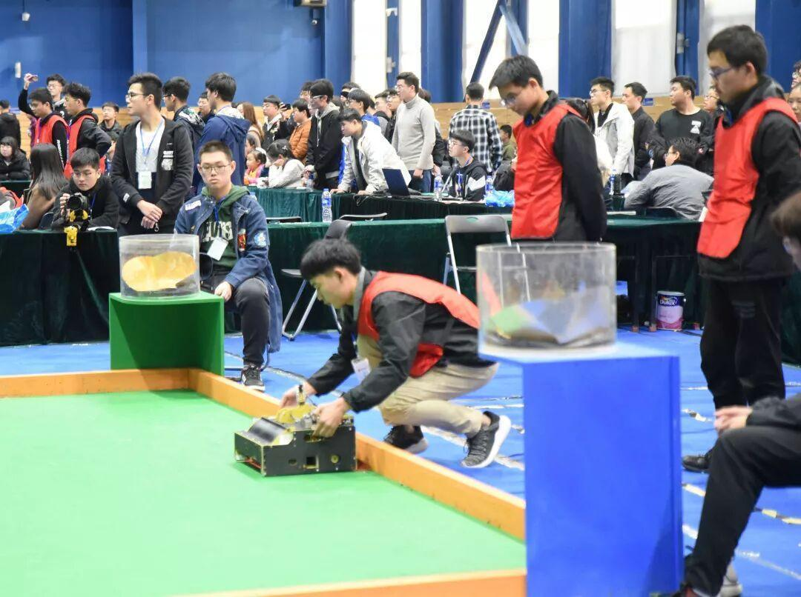
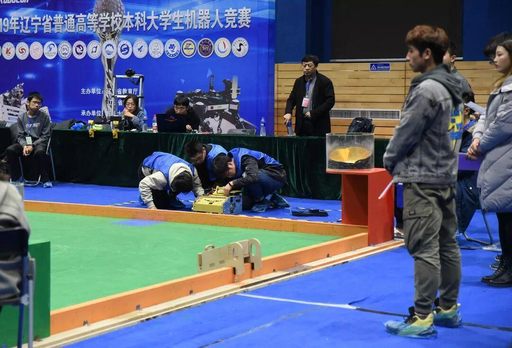
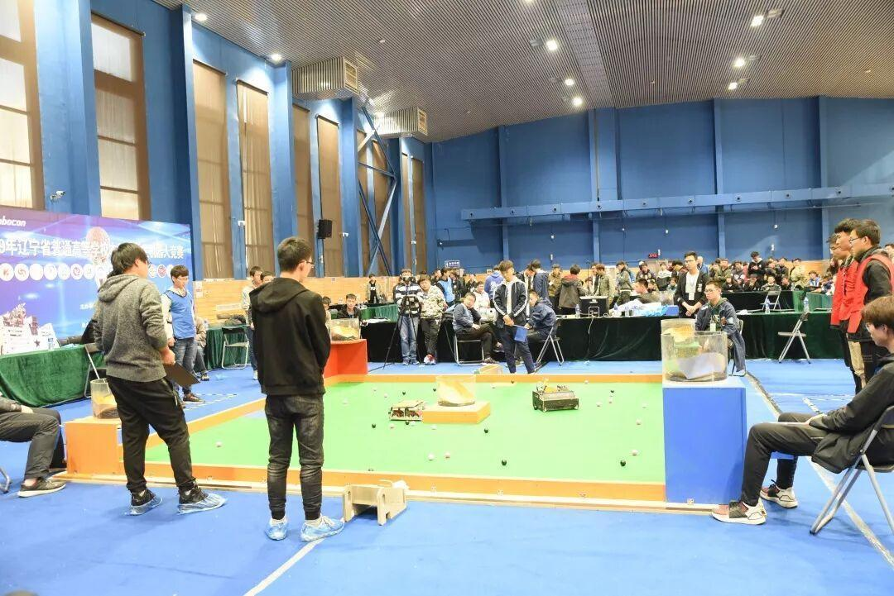
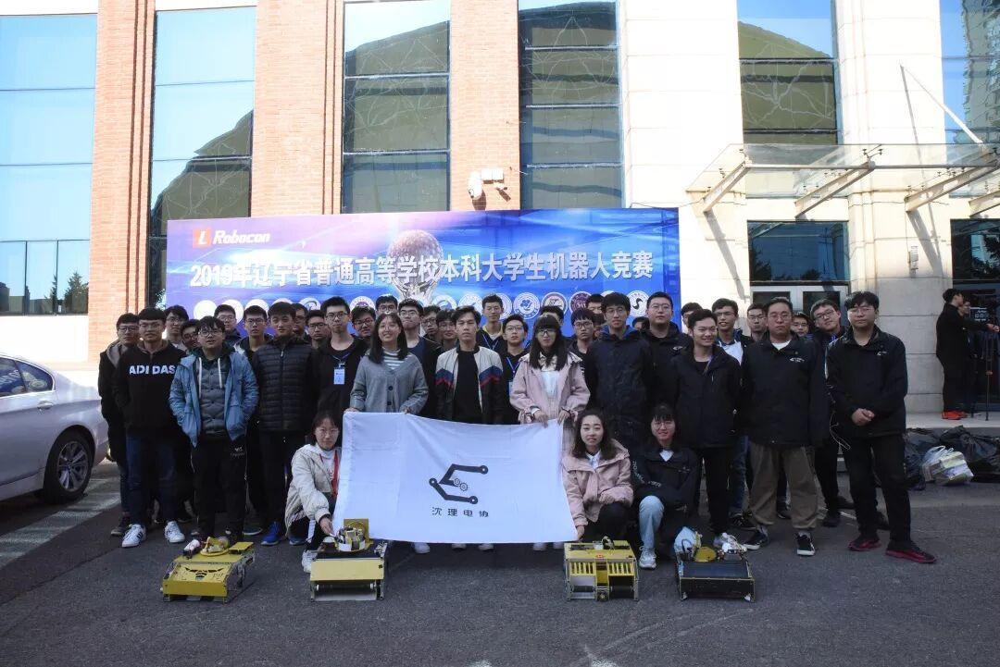
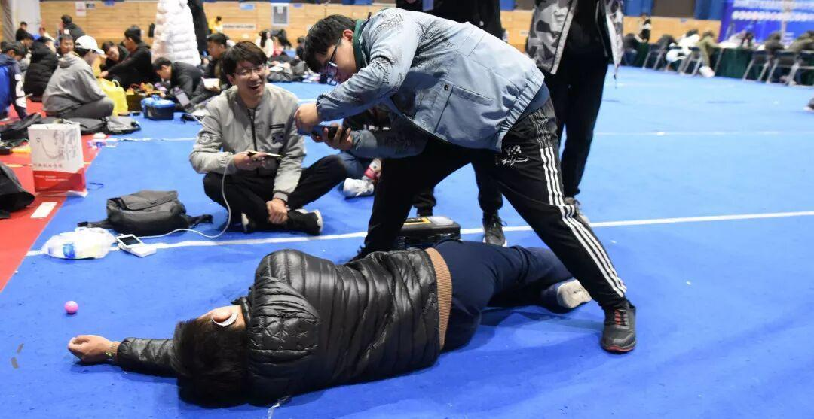
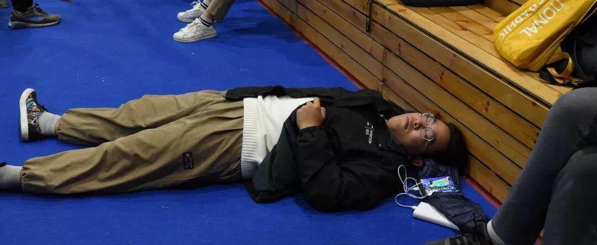
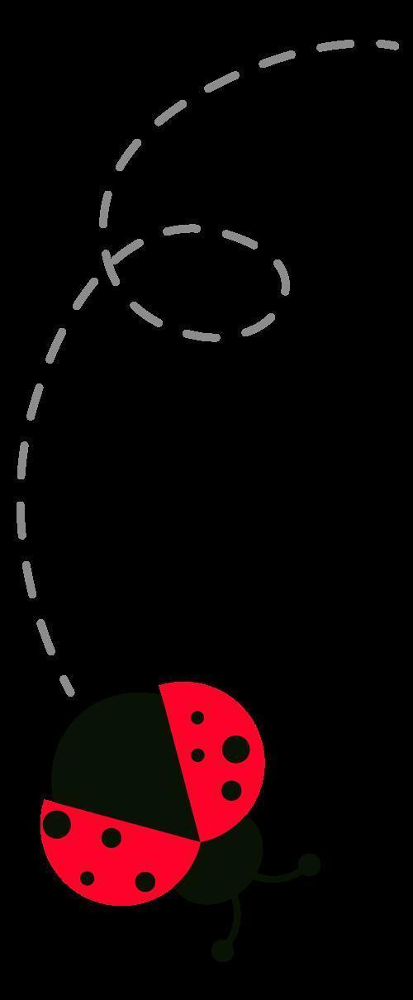

Robocon省赛|东大之战
第九届辽宁省普通高等学校本科
大学生机器人竞赛

10月26日至27日，2019年辽宁省普通高等学校本科大学生机器人竞赛成功举行。我校经学生组队申报，学院审核，我社团共有4支队伍成功参赛。
竞赛意义
本届机器人大赛以“月球勘探”为主题。 随着自动化时代的到来，人类的脚步已经不仅仅局限于地球。在这当中，机器人肩负着重要的使命,这是很大的挑战与机遇。本次比赛旨在提高广大学生对开拓新空间，勘探新能源的兴趣，增强创新思维能力，提升工程实践能力。


比赛规则
1.比赛时间为 3 分钟；
2.每支参赛队拥有 1 台自动机器人；
3.比赛开始前双方队员有 30 秒的准备，在准备时间双方将自动机器人摆放到出发区并开电；30 秒结束后，双方队员回到准备区；副裁判投放矿石，待矿石稳定后，主裁判 5秒倒计时后吹哨示意比赛开始，在 5 秒倒计时期间，每队只能有一名队员可以在靠近各自机器人的场外等待启动机器人；
4.裁判吹哨示意开始比赛后，自动机器人才能启动离开出发区；参赛队员回到场地外的准备区，直到比赛结束；
5.自动机器人在采矿区内进行拾取矿石任务，储藏室的矿石不允许再次被取出，落到场地外的矿石作废；
6.自动机器人将采集到的矿石放到储藏室内；
7.自动机器人单次采矿数量不限；
8.比赛开始后，自动机器人不允许重启和断电；若 3 分钟之内双方都申请断电，则裁判提前宣布比赛结束；
小组赛结果
小组赛我们共有四支队伍参加，经过一天的激烈角逐，有两支队伍在小组赛出线，即：沈阳理工大学一队与沈阳理工大学三队


淘汰赛结果
经过重重挑战，最后只有沈阳理工三队进入了十六进八制淘汰赛。第二天，队员们早早来到了赛场，再度踏上省赛的征战！最后我方惜败，但已尽了全力，不留遗憾就好！


赛后总结
同学们准备比赛历时将近四个月，期间要完成作品设计、作品搭建、电路设计、程序编写与调试等多项环节。本次比赛是对我校同学编程能力、电路知识、动手能力的一次考验，同时在有限的时间内完成高效地工作也是对同学们体力的考验。经过激烈的角逐和专家评委评审，我校有一只队伍获省二等奖，二支队伍获省三等奖！

参赛队员大合照😍
最后.............彩蛋~

你拍他，我拍你 .jpg
一个莫得感情的睡觉机器 .jpg


编辑：杜遇涵